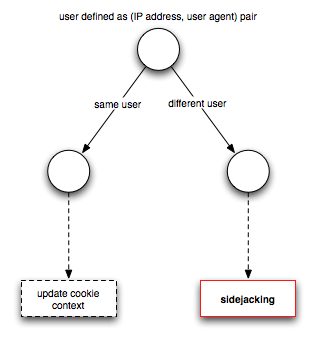
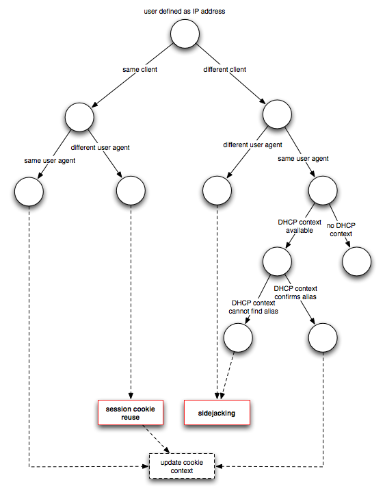

Taming the Sheep: Detecting Sidejacking with Bro
Update (June 22, 2011): You might also want to read the follow-up article about reducing false positives by incorporating ARP traffic.
The Firefox extension Firesheep brings sidejacking (or cookie hijacking) to the masses. Its convenient point-and-click interface allows even unskilled users to hijack their friend’s Facebook and Twitter accounts from a public wireless network, such as a coffee shop or at the airport.
This is a relevant issue because most popular Web 2.0 services only use TLS for the initial authentication and then drop back to unencrypted HTTP throughout the rest of communication. As a consequence, the session cookies fly around in clear text and are easily captured.
Detection
As network operators and security analysts, we would like to know when session hijacking occurs. In the following, I present the design and implementation of a sidejacking detector that I wrote for the Bro intrusion detection system.
Design Considerations
The detection strategy depends on the network topology and available context.
One problem is how to define a user. In flat IP address space, it makes sense
to identify a user by its IP address, but this would fail in a NAT environment,
where a single IP accomodates several users. For NAT scenarios, one could
define a user as a pair of IP address and User-Agent header. For large
NATs or NATs with identically configured machines, this latter notion of user
could be prone to false positivies, but this trade-off has to be faced.
Therefore, the notion of what constitutes a user can be configured in the
detector.
Another issue poses the presence of absence of DHCP context. Consider a hotspot or coffeeshop network operator with a private IP space. If Bro can see DHCP traffic, we can crisply identify a user by its MAC address and do not have to resort to high-level notions, such as provided by HTTP headers. In a static setup, however, this context will likely not be available. At the same time, if a different address reuses a session cookie in a static IP topology, we probably observed a sidejacking attack. Furthermore, if the same address uses the same sesssion cookie from a different user agent, we report such activity.
There is another subtlety: the cookie header consists of a list of key-value pairs, yet only a subset of those represent a user session while the others could be random. Simply comparing the entire cookie string against a value seen in the past would thus be prone to false negatives. Hence we have to restrict ourselves to the relevant session-identifying subset. In fact, this is how Firesheeps works: it ships with site-specific handlers that define the cookie keys to extract and then sets only those to impersonate a user. This motivates the following design: if a specification for a particular service is available, restrict the cookie to the relevant fields, and otherwise use the cookie as a whole. The default set of known services that ships with the detector is based on all handlers Firesheep currently implements.
Decision Trees
Given these considerations, how should the detector operate? Clearly, we need a flexible mechanism that can be configured to meet the specific conditions. Let us distinguish the two notions of users. If we have the opaque NAT setting, the detector operats according to the Figure below.

Updating the cookie context is not really an actionable item but means that the per-cookie state (such as when it was last seen) is being updated. In comparsion, the decision tree for a flat address space looks a little more elaborate.

Note that session cookie reuse is only reported when the user is defined as IP address.
Operation
Simply using the sidejacking detector is straight-forward and does not require detailed knowledge of Bro. Since it is implemented as a Bro script, running it only requires passing the filename of the script on the command line:
> bro -i eth0 sidejack
When Bro detects session hijacking, it will report a Sidejacking notice:
TIMESTAMP Sidejacking ATTACKER ADDRESS (ATTACKER HTTP SESSION ID) @ 'ATTACKER
USER_AGENT' hijacked SERVICE session (VICTIM HTTP SESSION) of VICTIM ADDRESS @
'VICTIM USER AGENT' last seen at SESSION COOKIE LAST SEEN via cookie SESSION
COOKIE
Similarly, session cookie reuse is reported as SessionCookieReuse and
has the following format:
ATTACKER ADDRESS (ATTACKER HTTP SESSION ID) reused SERVICE session VICTIM
SESSION ID in user agent 'ATTACKER USER AGENT', where previous user agent was
'VICTIM USER AGENT' and last seen at SESSION COOKIE LAST SEEN via cookie
SESSION COOKIE
Extending the detector with a new site profile is also not too complicated. I
would recommend to write a new Bro script and leaves the original one
unmodified. Similar to writing a new Firesheep handler, a corresponding
detector for a fictive service Foo at foo.com where a user session comprises
the two cookies session_id and auth_token would look as follows:
@load sidejack
redef HTTP::cookie_list +=
{
["Foo"] = [$url=/foo.com/, $keys=set("session_id", "auth_token")]
};
If the cookie keys are dynamically generated, as it is the case with Wordpress, one can also specify a regular expression instead:
redef HTTP::cookie_list +=
{
["Foo"] = [$url=/foo.com/, $pat=/session_[0-9A-F]+/]
};
Telling the detector to use DHCP involves mereley flipping a switch:
redef HTTP::use_dhcp_aliases = T;
Similarly, changing the notion of a user to include the user agent:
redef HTTP::user_is_ip = F;
To extend the analysis to all cookies and not only the listed known service profiles:
redef HTTP::known_services_only = F;
Finally, it is possible to tweak the cookie expiration interval, i.e., the time how long Bro remembers a cookie session. The example below tells Bro to keep cookies for 10 minutes only.
redef HTTP::cookie_expiration = 10 min;
If an attacker uses the cookie after the expiration interval, Bro will not detect it. Naturally, there is a trade-off between accumulating state in memory and opportunity for evasion.
Mitigation
By weaponizing the general public, Firesheep will hopefully push vendors to
switch TLS-only deployments more rapidly. During this painful migration period,
techniques like HTTP Strict Transport Security (HSTS) could prove
useful. A HSTS-enabled server sends a Strict-Transport-Security header to
the client that specifies a time period during which the client should use
encryption only. That is, the server upgrades the connection if the client
tries to use unencrypted HTTP.
Bro Code
Practical security is all about raising the bar. Hopefully this detector allows network operators to pinpoint the use of sidejacking attacks, such as facilitated by Firesheep, and take accountable action. The detector is part of Bro script repository which we created as an official place for user-contributed scripts. The latest version of the script can be downloaded here.
Load Comments